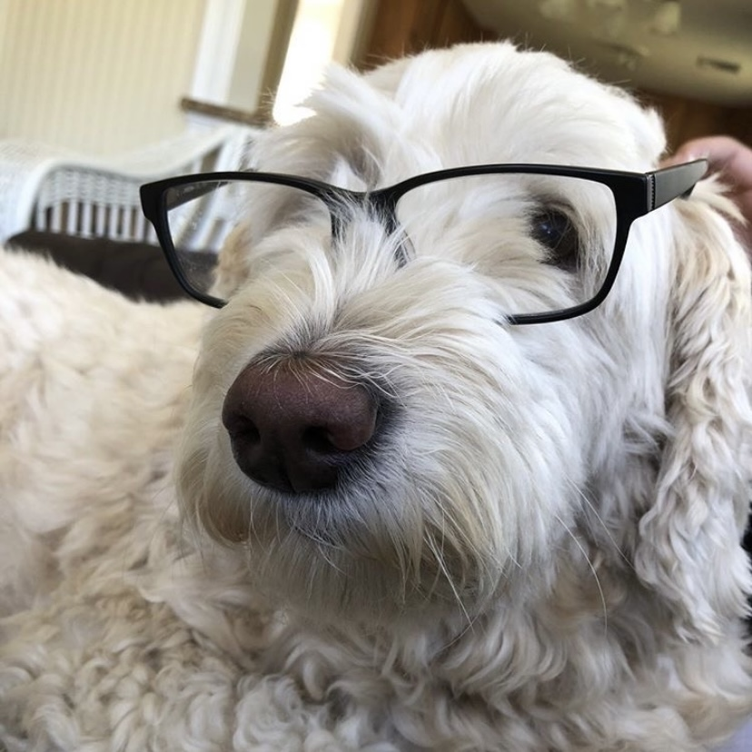
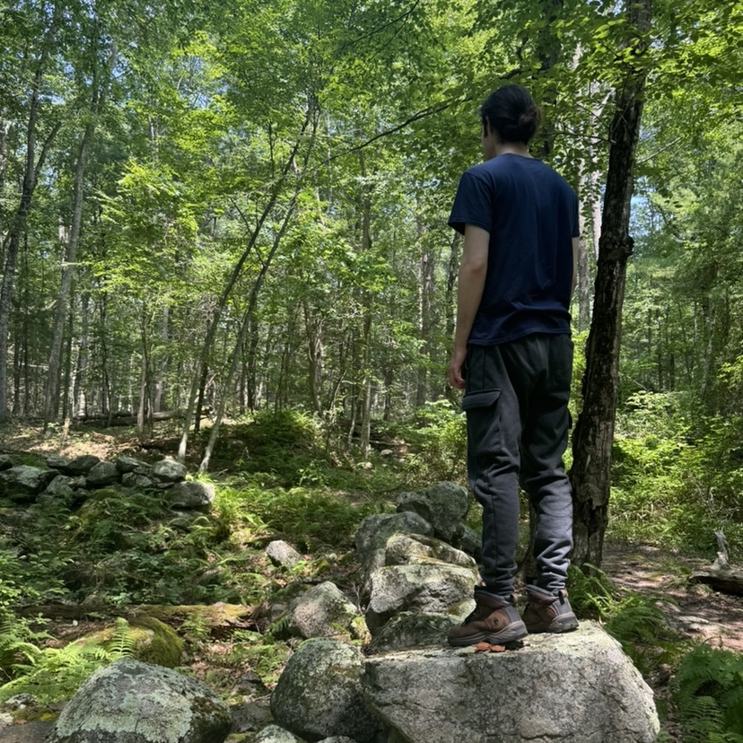

Test
When I began at URI as an in-state student, my declared majors were Art and History. I began with the impression that I would become a professional artist. However, my interests quickly shifted almost entirely to history and art history. I enrolled in an upper-level history class as a freshman with special permission, participated in a research fellowship in my second year, then a graduate level course in my third-year, and finally a graduate level research internship. I was fortunate to receive a scholarship and study abroad in Austria, although I realized there that German history was not my primary interest. However, the hard work of language-learning proved to be a valuable supplement to studying the history of psychiatry. I graduated having received an award in German Studies, an award from the History Department, and the annual Undergraduate Humanities Excellence Award awarded by the university's Center for the Humanities.

